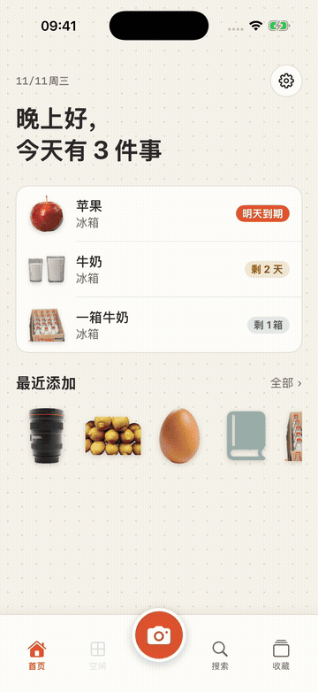

iPhone 家庭收纳与收藏 App
拍下来，就存好。
要找的时候，一搜就有。
冰箱里的牛奶、储藏间的纸巾、书架上的书、旅行带回来的杯子，都只要拍一张照片。放在哪里、还剩多少、什么时候到期，都记在你的手机里。
即将在 App Store 上架- ✓ 免费，没有广告
- ✓ 无需账号
- ✓ 数据只保存在你的 iPhone 上

添加
拍一张照片，自动抠图并存好
对准物品按下快门，背景会自动去掉。同一个相机画面还能识别条形码：食品到 Open Food Facts 查询，书籍到 Open Library 查询。买完东西回家，用“连续扫描”可以一次存好十几件。

三种视图
陈列、网格、列表，随时切换
陈列会把照片摆在冰箱门、点阵纸或软木板上，可以拖动和缩放。网格方便找东西；列表方便盘点，数量可以直接加减，用完了向左滑一下即可标记。

到期日
手机读取包装上的日期
拍照时，包装上印的到期日会被读取，由你确认后保存。到期前几天会用通知提醒你，提前几天可以自己设置。

收藏
给留下来的东西写下它的故事
旅行带回的杯子、朋友送的礼物，都可以加上照片、日期、地点和几句话。还可以归入合集，例如“京都 2024”。“往年今日”会把它们带回首页。

空间
冰箱、800库、书架，或自己命名
模板有冰箱、800库（深约 80 厘米、可以走进去的储物间）、柜子、书架、衣柜、收藏柜、药箱和搬家箱。也可以自己选图标、起名字。需要的话，可以按住所或楼层给空间分组。

这些时候用得上
- 买菜前，先看冰箱里还有什么
- 做饭时，先用快到期的
- 找 5 号电池放在哪里
- 记住书借给了谁
- 记下搬家时每个箱子里装了什么
- 整理旅行纪念品
- 检查药箱里有没有过期的药
40 秒看完
把冰箱在三种视图之间切换、修改数量，再打开一件收藏品的回忆。
AI（可选）
不用 AI 也能完整使用。如果想用，有两种来源，只有在你点按 AI 按钮时才会调用。
Apple 内置
使用 iPhone 上的 Apple Intelligence：免费、离线，数据不会离开手机。需要支持的 iPhone 和 iOS 26 或更高版本。
你自己的 API key
可使用 Gemini、Claude、DeepSeek 等。key 只保存在这台 iPhone 的钥匙串中，数据直接发送到你选择的服务，不经过我们。
- 帮我命名：识别照片里的物品，并建议分类和单位
- 看看这个空间：冰箱里先吃什么，储藏间要补什么，药箱里哪些已过期（不提供医疗建议）
- 一句话查找：先补上近义词，再进行搜索
- 润色回忆：把几个词整理成一段话，不会添加你没说过的内容
徽章和分享卡
冰箱连续 30 天没有物品过期，就能获得“冰箱守护者”。徽章、物品故事和年度回顾都可以保存为图片；位置和价格默认不会放进去。

详细信息
| 设备 | iPhone（iOS 18 或更高版本） |
|---|---|
| 语言 | English, 繁體中文, 简体中文, 日本語, 한국어, ไทย |
| 价格 | 免费，没有内购，没有广告 |
| 账号 | 不需要 |
| 数据 | 只保存在这台 iPhone 上，可导出为 CSV；删除的物品 30 天内可以恢复 |
| 网络 | 只用于条形码查询和你选择的 AI 服务 |
限制
- 目前还不支持 iCloud 同步和家人共享
- 条形码数据库里没有的商品，需要你自己输入名称；下次扫描同一个条形码时会使用这个名称
- 抠图效果取决于照片；如果失败，会使用原照片